Network Canvas & CLI Dashboard Gallery
Comprehensive showroom of 15 fully self-contained, zero-dependency HTML one-shot prototypes: 5 proprietary whiteboard canvases + 10 CLI proxy and usage dashboards.
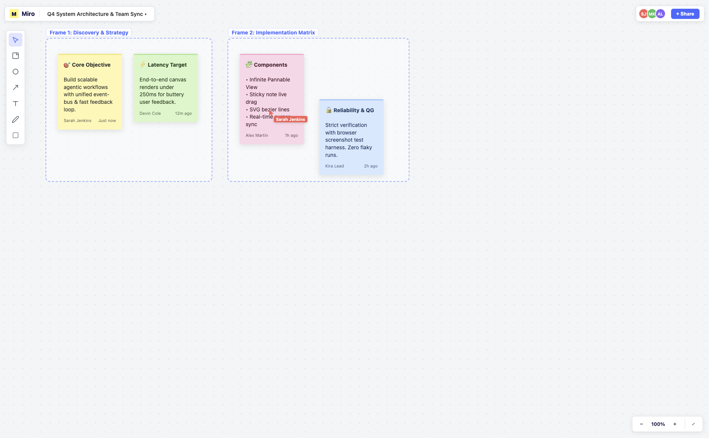
Infinite CanvasMiro
🟢 QG PASSCollaborative strategy board with pan/zoom engine, colored draggable sticky notes, frames, zoom controls, and simulated live cursor sync.
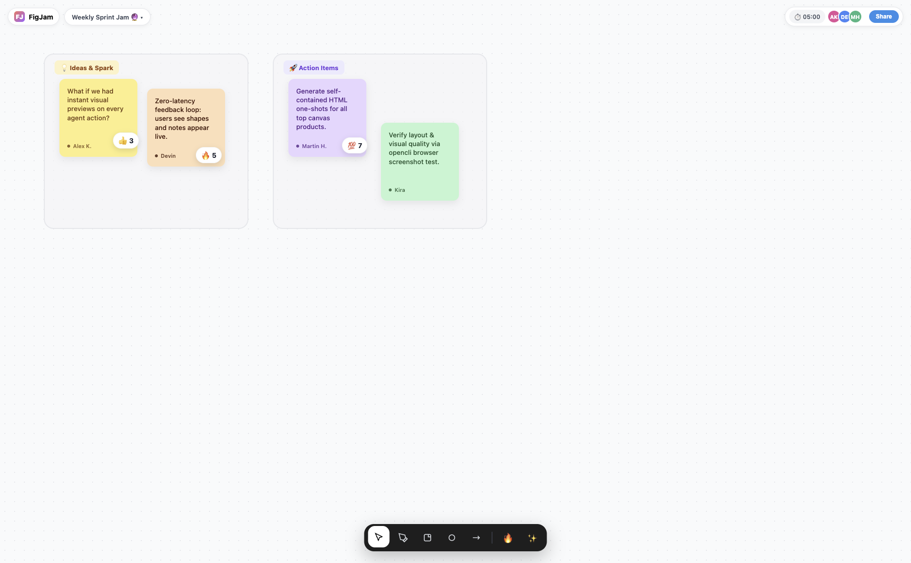
WhiteboardFigJam
🟢 QG PASSPlayful Figma-style whiteboard with floating bottom dock, section containers, sticky notes with author chips, and clickable reaction stamps.
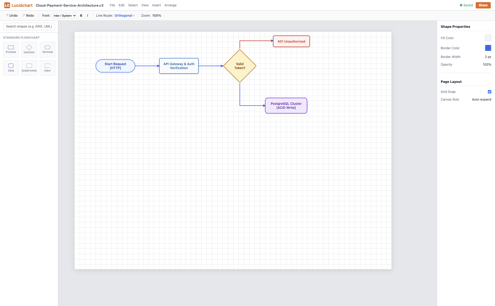
DiagrammingLucidchart
🟢 QG PASSEnterprise cloud architecture diagram with left shape library dock, top formatting ribbon, right inspector panel, and orthogonal elbow connectors.
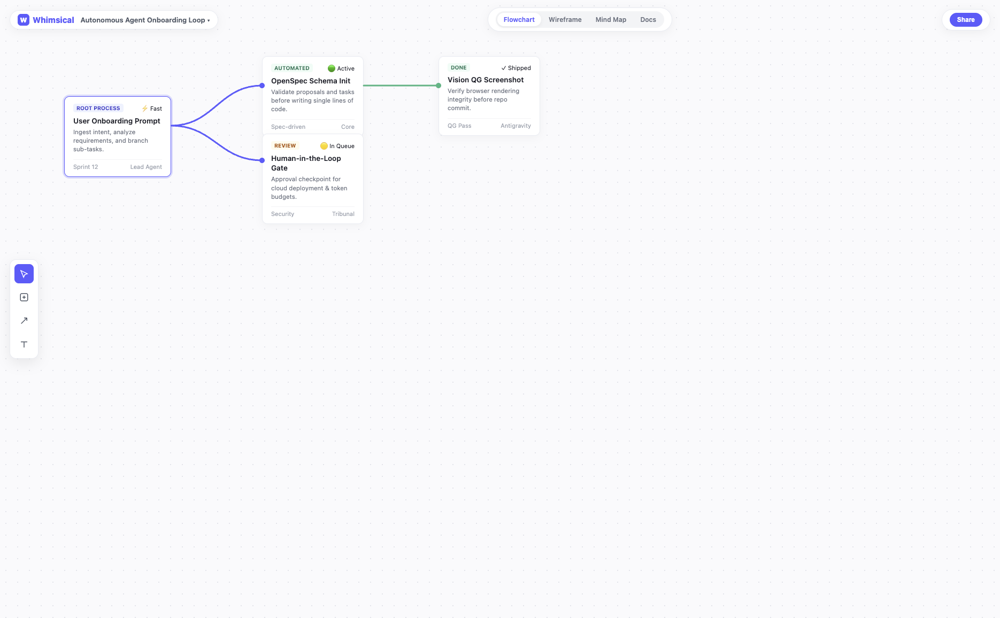
Mind Map & FlowWhimsical
🟢 QG PASSSpeed-first workflow canvas with mode switcher, card nodes with status badges, and smooth branching bezier curves connecting trees.
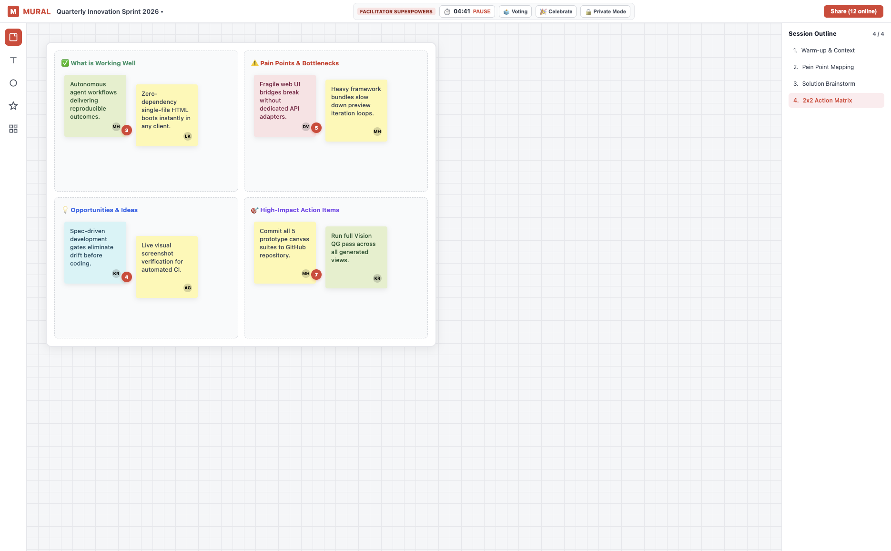
FacilitationMural
🟢 QG PASSFacilitation suite with live countdown timer, voting tools, right session outline, 2x2 matrix framework, and color-coded stickies with vote dots.
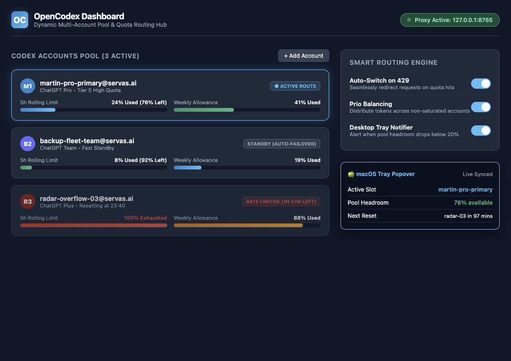
Web + TrayOpenCodex
🟢 QG PASSMulti-account router with 5h rolling & weekly quota bars per account, auto-switch engine on 429 errors, and simulated macOS tray popover preview.
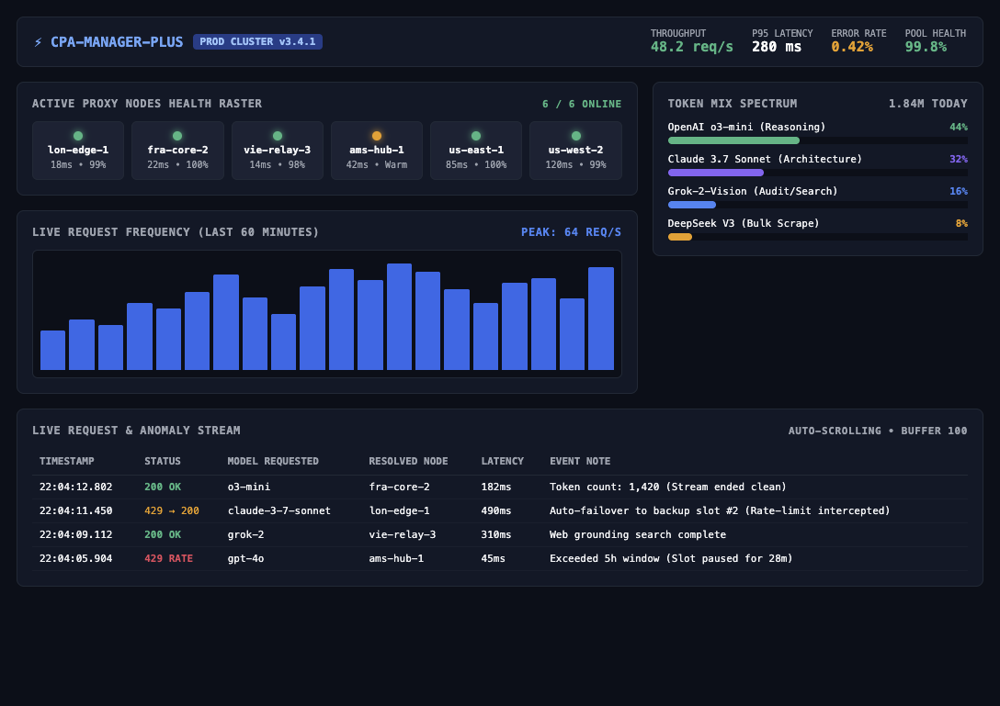
Web OpsCPA-Manager-Plus
🟢 QG PASSHigh-density operations cockpit with proxy node health raster (6 nodes), live traffic frequency chart, token mix spectrum, and real-time request logs.
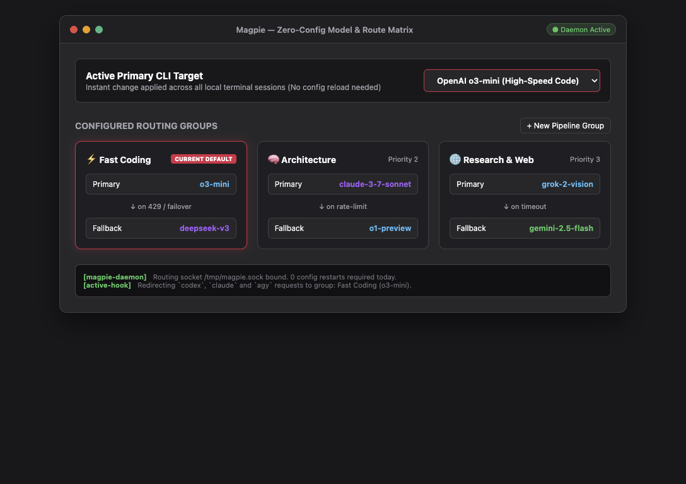
Desktop / TUIMagpie
🟢 QG PASSZero-config dynamic model switch and routing groups builder. Select active CLI targets and inspect fallback chains without editing config files.
 Desktop App
Desktop AppEasyCLIProxy
🟢 QG PASSClean desktop manager featuring OAuth provider cards (OpenAI, Anthropic, Google, xAI), local proxy endpoint routing table, and instant quota inspector.
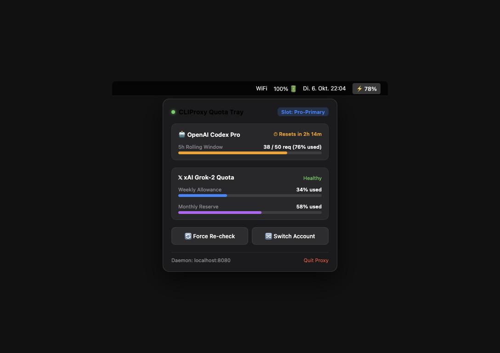
macOS TrayCLIProxy Quota Tray
🟢 QG PASSCompact macOS menubar popover tracking Codex Pro 5-hour rolling limits, Grok weekly & monthly quota progress bars, reset countdowns, and quick actions.
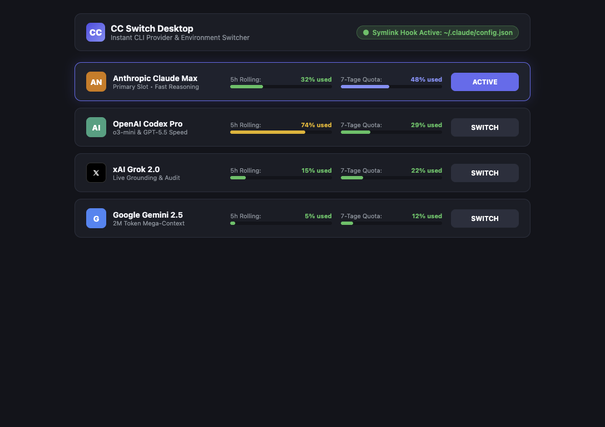
Desktop AppCC Switch
🟢 QG PASSProvider switcher displaying both 5-hour rolling limit and 7-day quota percentages directly in each provider row, with instant profile activation.
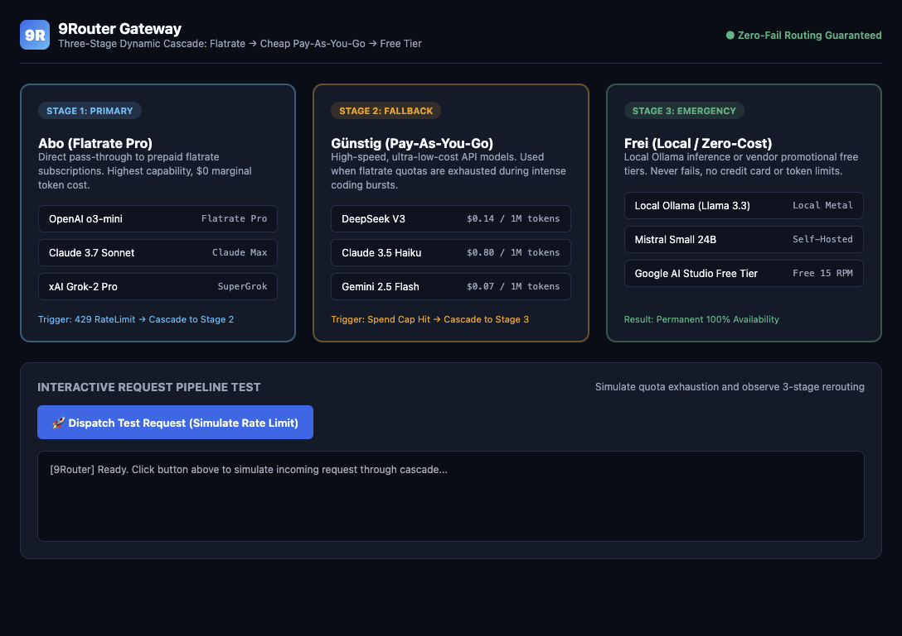
Web Gateway9Router
🟢 QG PASSThree-stage fallback cascade: Stage 1 (Flatrate Abo), Stage 2 (Cheap Pay-As-You-Go), Stage 3 (Local / Free Tier), with interactive request test dispatch.
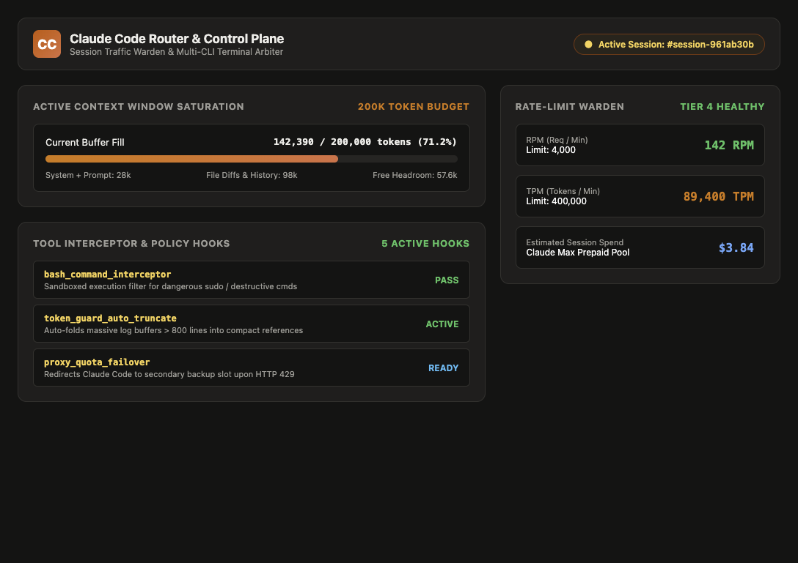
Control PlaneClaude Code Router
🟢 QG PASSDedicated control plane for Claude Code sessions featuring context window gauge (200k tokens), tool interceptor hooks, and RPM/TPM rate-limit wardens.
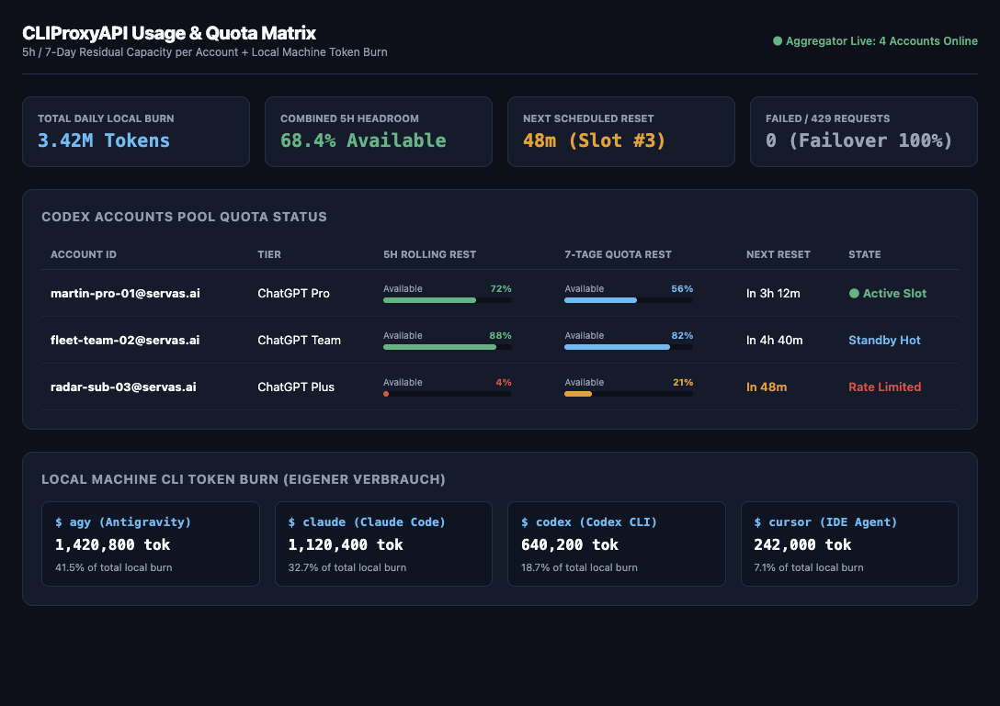
Web Analyticscliproxyapi-usage
🟢 QG PASSAggregated dashboard reporting 5h and 7-day residual allowances across all active Codex accounts alongside local machine token burn broken down by CLI.
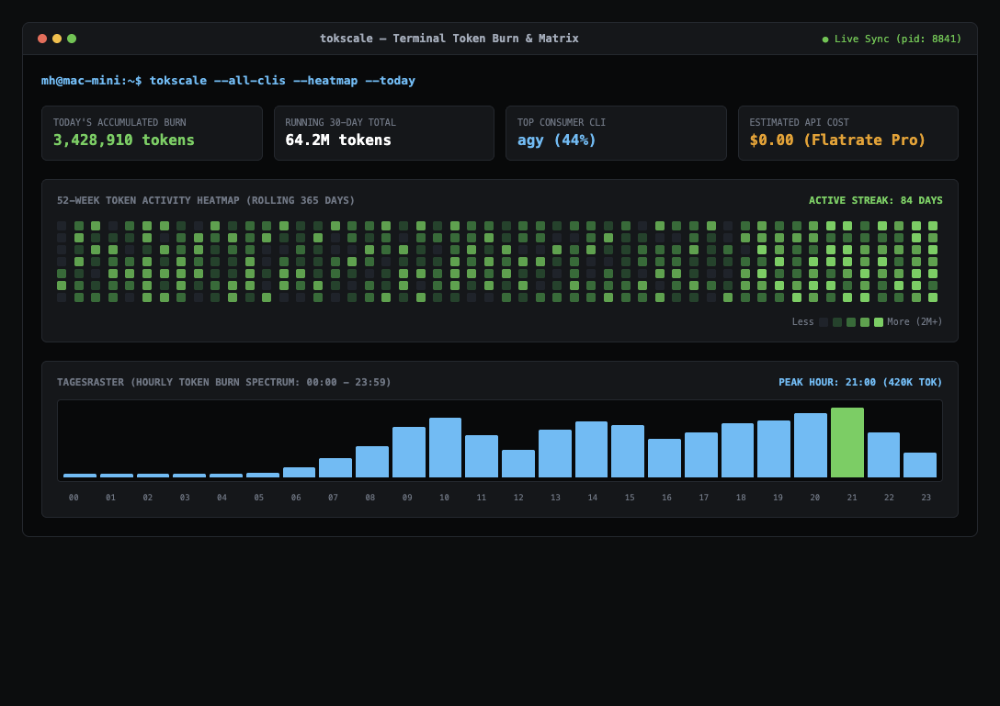
Terminal / TUITokscale
🟢 QG PASSRetro terminal token monitor featuring a 52-week GitHub-style contribution heatmap grid, 24-hour hourly burn spectrum, and local agent consumption stats.